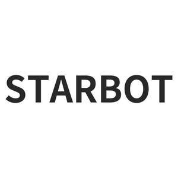

Trade Mark Journal No.2025/011 14 March 2025
UK00004142219 30 December 2024 (7,9)

- Class 7
- Cowlings [parts of machines]; industrial robots; robots for cleaning; robots for machine tools; Handling machines, automatic [manipulators]; Hand-held tools, other than hand-operated; Dynamos; Motors, electric, other than for land vehicles; Motors, other than for land vehicles; alternating current servo motors; air cleaners [air filters] for engines; taps [parts of machines, engines or motors]; Compressors [machines]; Pumps [parts of machines, engines or motors]; Belts for machines; Gear boxes other than for land vehicles; Machine wheelwork; Bearings [parts of machines]; Machines and apparatus for cleaning, electric; Pressure regulators [parts of machines]; Waste disposal units; Dust exhausting installations for cleaning purposes; machines and apparatus for carpet shampooing, electric; cordless vacuum cleaners; Vacuum cleaners; Central vacuum cleaning installations; Elevating apparatus; valves [parts of machines]; regulators [valves] being parts of machines; cylinders [machine parts]; Shaft couplings [machines]; Axles for machines; Speed governors for machines, engines and motors; Bearings for transmission shafts; Conveyors being machines; Bearing housings [machine parts]; Gears, other than for land vehicles; Hydraulic controls for machines, motors and engines; Transmission mechanisms, other than for land vehicles; Pneumatic controls for machines, motors and engines; Reduction gears other than for land vehicles; Industrial robots and industrial robotic systems, namely, robotics constructed of rigid materials with visual image sensors, and structural parts therefore, for use in supply chain, distribution and logistics; Industrial transportation robots, namely, robots constructed of rigid materials used in lifting installations for the transport of persons and goods, for use in supply chain, distribution and logistics; Automated distribution machines in the form of industrial robots constructed of rigid materials for use in supply chain, distribution and logistics; robotics and robotic systems comprised primarily of robots for logistical use in the nature of machines for use in the movement of goods and materials, and also containing recorded and downloadable operating software, communications systems comprised of computer hardware and recorded and downloadable software for controlling robots, and 3D, camera, lidar, and perception sensors sold together as a unit; robotics and robotic systems comprised primarily of robots for industrial use, and also containing recorded and downloadable operating software, communications systems comprised of computer hardware and recorded and downloadable software for controlling robots, and 3D, camera, lidar, and perception sensors.
- Class 9
- Computer software for processing digital images; computer chatbot software for simulating conversations; software for processing images, graphics, audio, video and text; Data processing apparatus; humanoid robots with artificial intelligence for use in scientific research; laboratory robots; teaching robots; telepresence robots; Electronic controllers for servo motors; Controllers for servo motors; Electric actuators; Electric linear actuators; humanoid robots having communication and learning functions for assisting and entertaining people; humanoid robots with artificial intelligence for preparing beverages; user-programmable humanoid robots, not configured; sensors; downloadable software applications for mobile phones; computer programs, recorded; operating system programs; Navigation apparatus for vehicles [on-board computers]; security surveillance robots; Surveying apparatus and instruments; Alarm monitoring systems; Electrical and electronic burglar alarms; Electro-dynamic apparatus for the remote control of signals; Remote control telemetering machines and apparatus; Surveying machines and instruments; Tactical robots; quadruped robots with artificial intelligence for use in security, safety and inspection applications; quadruped robots with artificial intelligence for entertainment; Artificial intelligence apparatus, in the nature of computer hardware and downloadable software for use in supply chain, distribution and logistics; Downloadable software for connecting and operating robots constructed of rigid materials and artificial intelligence apparatus, for use in supply chain, distribution and logistics; robots for laboratory research and laboratory educational use; robotics and robotic systems comprised primarily of robots for laboratory use, and also containing recorded and downloadable operating software, communications systems comprised of computer hardware and recorded and downloadable software for controlling robots, and 3D, camera, lidar, and perception sensors; robotics and robotic systems comprised primarily of robots for personal and hobby use, and also containing recorded and downloadable operating software, communications systems comprised of computer hardware and recorded and downloadable software for controlling robots, and 3D, camera, lidar, and perception sensors; robotics and robotic systems comprised primarily of robots for tactical use, and also containing recorded and downloadable operating software, communications systems comprised of computer hardware and recorded and downloadable software for controlling robots, and 3D, camera, lidar, and perception sensors.
STARBOT ROBOTICS INC.
Representative: Haseltine Lake Kempner LLP